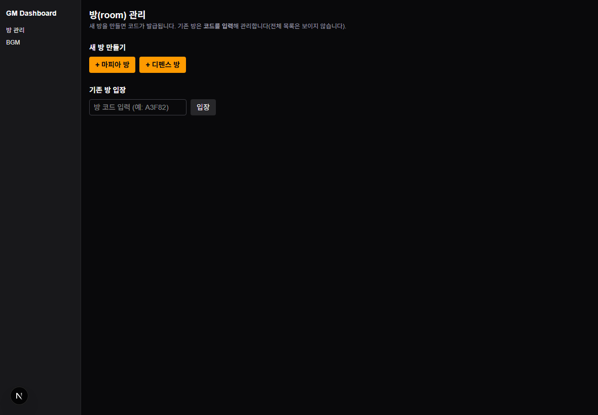
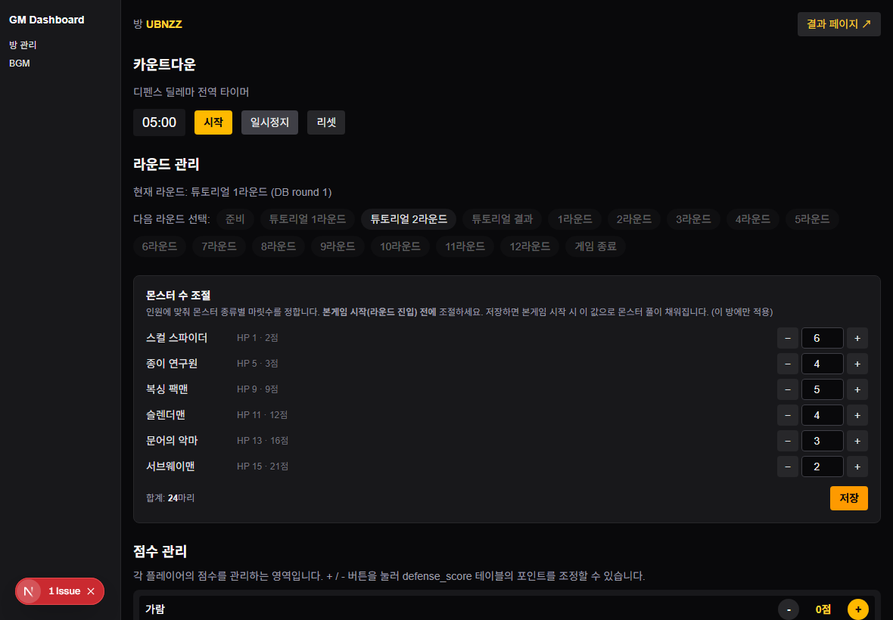
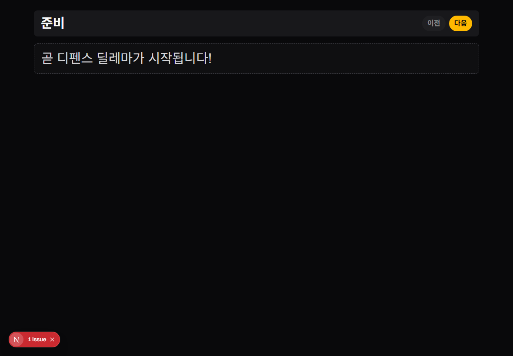
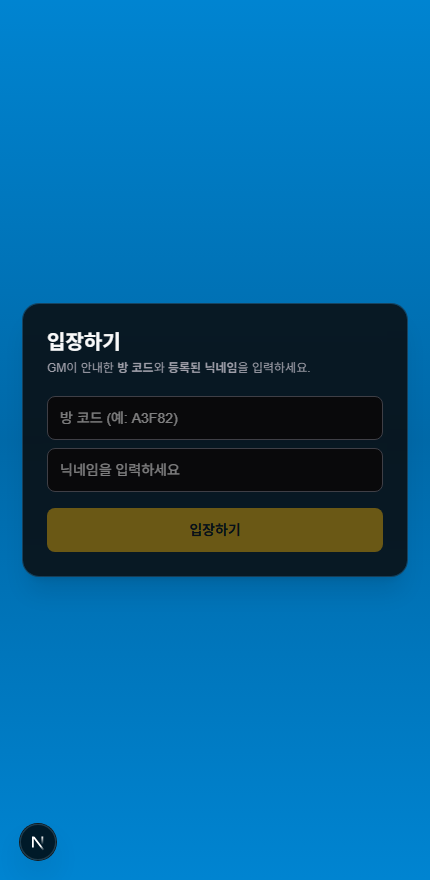
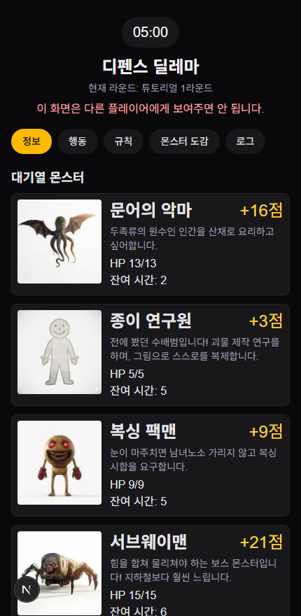
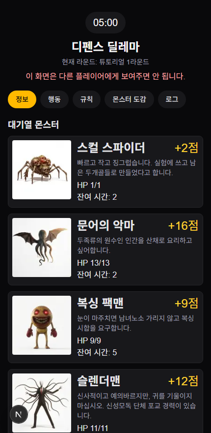
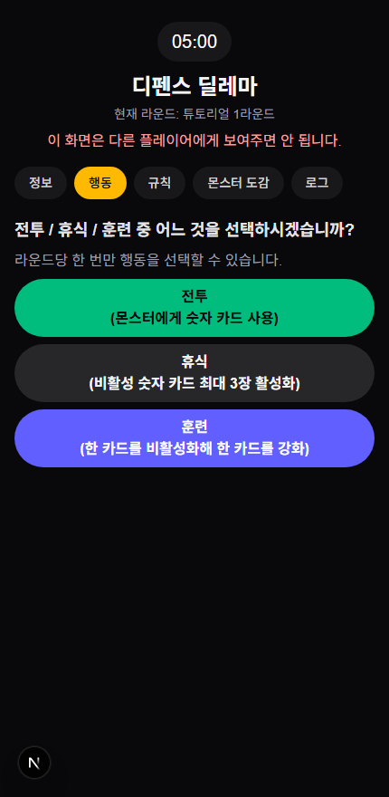
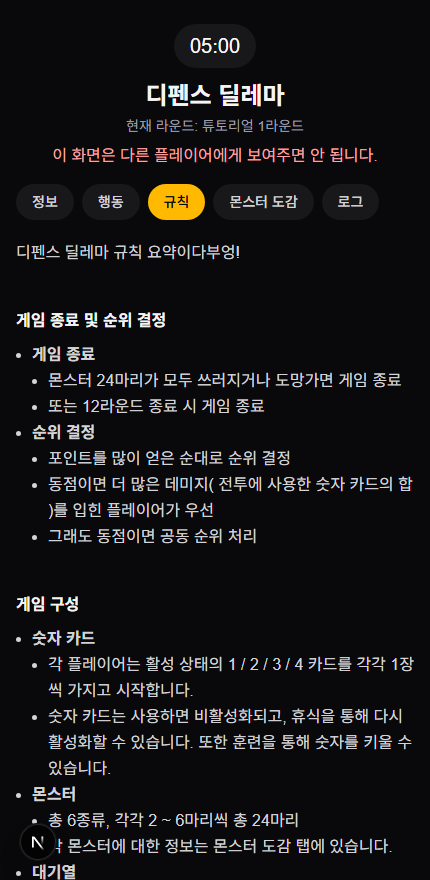
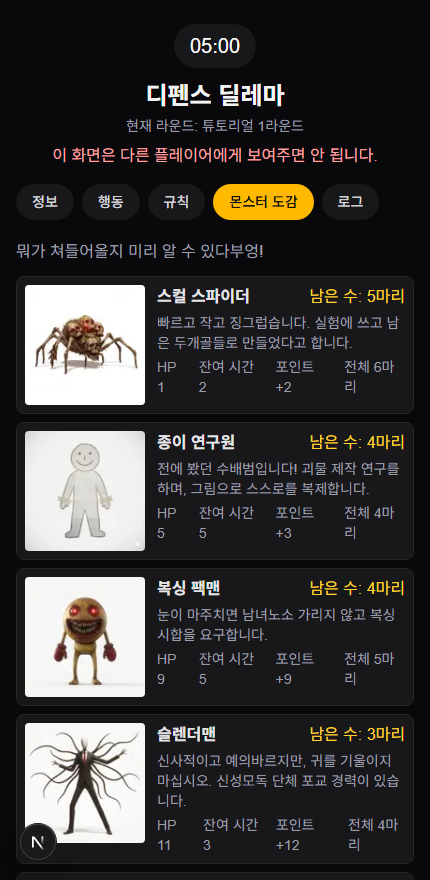

게임을 소개할 때 이 포스터를 빔/모니터에 띄우거나, 위 버튼으로 내려받아 홍보·안내 자료로 활용하면 좋습니다.
빠른 정보
• 권장 인원 — 6명 ~ 9명 (화면 예시는 4명)
• 예상 소요시간 — 약 1~1.5시간 (튜토리얼 2라운드 + 본게임 7라운드, 각 라운드 5분)
• 한 줄 목표 — 함께 몬스터를 잡되 포인트는 개인 경쟁. 종료 시 포인트 1위가 우승(동점이면 누적 데미지가 큰 쪽).
• 준비물 — GM은 진행을 위해 노트북/패드가 필요합니다.
• BGM — BGM은 대시보드의 BGM 페이지에서 활용할 수 있습니다.
제작자 코멘트
게임이 심플하여 전략의 수가 그렇게 많지 않지만, 재참여 한두 번까지는 하도록 할 수 있는 게임이라고 생각합니다. 밀담을 할 수 있는 공간과 밀담이 많이 이뤄질수록 재미있는 정치게임입니다. 주요 전략은 끈끈한 2명 연합을 만든 후 훈련을 해서 복싱 팩맨이나 슬렌더맨을 주로 잡는 것, 박쥐 전략으로 다수 연합에 편승하는 것 등이 있습니다. 인원이 달라지면 몬스터의 숫자를 조절하여 밸런스 패치가 필요합니다. 카드의 효과, 몬스터 효과를 다양화하여 더 다채로운 게임으로 발전시킬 가능성이 있어 보입니다.
도입 멘트(예시) — "사이비 단체가 괴물을 풀어 도시를 습격합니다. 협동해 몬스터를 쓰러뜨리고 포인트를 나눠 가지세요. 단, 비열한 무임승차자가 있을 수 있습니다."
몬스터는 4칸짜리 대기열에 줄지어 나타납니다. 참가자들은 라운드마다 행동을 하나 골라 몬스터를 공격합니다. 여러 명이 같은 몬스터를 공격하면 숫자가 합산되어 더 강한 적도 잡을 수 있지만, 보상 포인트는 공격한 인원이 나눠 가집니다. 게임이 끝났을 때 포인트가 가장 많은 사람이 우승합니다(동점이면 누적 데미지가 큰 쪽).
승리 판정 — 종료 시 누적 포인트 1위가 우승. 동점이면 그동안 몬스터에게 입힌 누적 데미지가 큰 쪽이 이깁니다.
1. 방 만들기 + 참가자 등록
한 개의 사이트가 여러 방을 동시에 운영합니다. GM이 방을 만들면 방 코드(예 A3F82)가 발급되고, 그 코드를 받은 참가자만 입장합니다. 디펜스 방과 마피아 방은 각각 따로 만들어 운영합니다.
그 방의 [참가자]에서 이번 팀의 닉네임을 모두 등록합니다. (여기 등록한 사람만 입장할 수 있습니다.)
발급된 방 코드를 참가자에게 안내합니다.
참가자는 닉네임을 등록하고 방 코드를 받으면 바로 입장할 수 있습니다. GM이 따로 "준비 상태"로 만들 필요는 없습니다. 입장하면 초기 상태로 대기합니다.
방은 '방 관리'에서 방 코드로 관리합니다. 전체 방 목록은 따로 보이지 않으니, 발급받은 방 코드를 기록해 두세요.

방 관리: 방 생성 버튼 · 코드로 방 관리 · 참가자 등록 · 대시보드 입장
2. 진행 순서 (GM 대시보드)
방 관리에서 그 방의 [대시보드 입장]을 누르면 아래 화면이 열립니다. 화면에는 카운트다운(타이머), 라운드 관리, 점수 관리가 보입니다. 버튼은 화면 흐름대로 따라가면 됩니다.

디펜스 GM 대시보드 — 카운트다운, 라운드 관리, 점수 관리
① 게임 만들기 · 튜토리얼
먼저 이 방으로 게임을 시작합니다. 이 방에 등록한 참가자 명단으로 게임이 만들어집니다.
튜토리얼 2라운드를 먼저 진행합니다(현재 건너뛸 수 없습니다). 흐름(행동 고르기 → 전투 처리)을 익힌 뒤 본게임을 시작하세요.
② 본게임 (7라운드) — 라운드마다 같은 흐름 반복
본게임은 총 7라운드이며, 각 라운드는 5분입니다. 한 라운드는 아래 흐름으로 진행됩니다.
라운드 시작 — 5분 타이머가 돕니다. 참가자는 이 시간 안에 휴대폰에서 행동 1개를 골라 제출합니다(시간 내 변경 가능). 대기열에는 몬스터 최대 4마리가 줄 서 있습니다.
전투 처리 — 5분이 끝나면 전투를 정산합니다. 같은 몬스터에 제출된 공격 숫자를 합해 처치 여부를 판정하고(아래 규칙), 처치된 몬스터의 보상을 공격 인원에게 나눠 줍니다. 이때 결과 중계 페이지를 빔/모니터로 보여주세요(아래 3번).
점수 관리 / 다음 라운드 — 화면에서 점수가 갱신됩니다. 빈 대기열은 새 몬스터로 채워지고, 다음 라운드로 넘어갑니다.
몬스터가 처치되었는지, 총 몇의 피해를 받았는지만 공개되고, 누가 어떤 행동을 했는지·어느 카드를 어디에 냈는지는 공개되지 않습니다. 4라운드와 8라운드가 끝난 후 결과 중계 페이지를 통해 중간 점수가 공개됩니다.
③ 종료
7라운드가 끝나거나, 모든 몬스터가 처치/도망쳐 더 이상 적이 없으면 게임이 종료됩니다. 화면에 포인트 순위가 표시됩니다(동점 시 누적 데미지가 큰 쪽 우선).
3. 결과 중계 페이지 (빔/모니터 송출)
GM 대시보드에서 [결과 페이지 ↗](또는 결과 화면 열기) 버튼을 누르면 그 방의 디펜스 중계 화면이 새 탭으로 열립니다. 빔/모니터에 띄워 참가자 전체에게 보여주세요.
매 라운드 전투 처리 때마다 이 결과 페이지로 중계하세요. 어떤 몬스터가 쓰러졌는지, 누가 살아남았는지, 도망친 적은 없는지를 크게 보여주며 해설하는 것이 진행의 핵심입니다.

결과 중계 페이지 — 대기열 · 전투 결과 · 점수를 크게 송출
4. 플레이어 입장 & 플레이 방식
참가자는 플레이어 입장 페이지 ↗에서 방 코드 + 닉네임을 입력해 들어옵니다(아래 휴대폰 화면 참고). 입장하면 바로 게임에 참여합니다.
각자 활성 카드 1·2·3·4를 한 장씩 갖고 시작합니다.
라운드마다 행동 1개만 고릅니다 — 전투 / 휴식 / 훈련.
대기열의 몬스터 도감을 보고 어디를 칠지 정합니다.
결과는 전투 처리 때 결과 페이지/내 화면에서 확인.

입장: 방 코드 + 닉네임 입력(휴대폰)

디펜스 플레이어 화면 — 대기열 몬스터 도감(휴대폰)
플레이어 화면의 4개 탭
플레이어 화면은 아래 네 개의 탭으로 이뤄져 있습니다. 참가자는 탭을 오가며 상황을 확인하고 행동을 고릅니다.

정보 탭 — 라운드·점수·내 상태를 확인

행동 탭 — 전투·휴식·훈련 중 하나를 선택

규칙 탭 — 활성 이상현상 등 게임 규칙을 확인

몬스터 도감 탭 — 6종 몬스터 정보를 확인
5. 규칙
카드와 행동
각자 숫자 카드 1·2·3·4를 한 장씩 가지고 시작합니다. 라운드마다 아래 세 행동 중 하나만 고릅니다.
행동
내용
전투
대기열 몬스터 1마리를 고르고 활성 카드 1장을 제출. 제출한 카드는 비활성화됩니다. 같은 몬스터에 여러 명이 내면 숫자가 합산됩니다.
휴식
비활성 카드를 최대 3장까지 다시 활성화합니다.
훈련
활성 카드 1장을 비활성화하고, 아무 카드 1장의 숫자를 영구히 +1 합니다.
전투 처리 (라운드 5분 후)
한 몬스터에 제출된 숫자 합 ≥ 그 몬스터의 HP면 처치 → 보상 포인트를 공격한 인원 수로 균등 분배(나머지는 버림).
숫자 합 < HP면 처치 실패 → 그만큼 HP만 감소하고 몬스터는 남습니다.
처치되지 못한 몬스터는 잔여시간 -1. 잔여시간이 0이 되면 도망칩니다.
도망친 몬스터가 있으면 단체 페널티 — 전원이 가장 큰 활성 카드 1장을 비활성화당합니다.
빈 대기열 칸은 새 몬스터로 채워집니다(최대한 서로 겹치지 않게).
누가 무엇을 했는지, 어느 카드를 어디에 냈는지는 비공개입니다. 협동해야 강한 적을 잡지만, 보상은 나뉘므로 "남이 잡겠지" 하고 빠지는 무임승차가 생깁니다 — 이것이 게임의 딜레마입니다.
몬스터 도감 (6종 · 총 24마리 · 대기열 4칸)
몬스터
HP
잔여시간
포인트
마릿수
설명
스컬 스파이더
1
2
+2
6
빠르고 작고 징그럽다
종이 연구원
5
5
+3
4
그림으로 자신을 복제
복싱 팩맨
9
5
+9
5
눈 마주치면 복싱 시합을 요구
슬렌더맨
11
3
+12
4
신성모독 단체 포교 경력
문어의 악마
13
2
+16
3
인간을 산 채로 요리하려 함
서브웨이맨
15
6
+21
2
보스 — 힘을 합쳐야 처치 가능
HP = 처치에 필요한 숫자 합 / 잔여시간 = 도망까지 남은 라운드 / 포인트 = 처치 시 나눠 갖는 보상.
몬스터 수 조절 — 몬스터 수는 인원에 따라 대시보드의 '몬스터 수 조절'에서 방별로 바꿀 수 있습니다. 기본값 (스컬6/종이4/복싱5/슬렌더4/문어3/서브웨이2)은 8명 기준입니다. 인원이 달라지면 서브웨이맨 수는 그대로 두고, 슬렌더맨을 줄이고 복싱 팩맨을 늘리거나, 반대로 슬렌더맨을 줄이고 문어의 악마를 늘리는 식으로 조절하길 권합니다.
점수와 중간 공개
처치 보상은 공격한 인원 수로 균등 분배(내림). 혼자 잡으면 전부 차지합니다.
4라운드 · 8라운드가 끝나면 중간 점수를 공개합니다.
최종 포인트 1위가 우승. 동점이면 누적 데미지가 큰 쪽이 이깁니다.
6. 실수했을 때 (복구)
당황하지 마세요. 진행이 꼬이면 새 방을 만들면 됩니다.
방이 엉켰을 때 — 방 관리 화면에서 [+ 디펜스 방]으로 새 방을 만들면 됩니다. 이전 방은 [종료] 표시만 해두면 됩니다(기록은 보존).
다음 팀 — 팀이 바뀌면 새 방을 만들어 진행합니다. 디펜스 방과 마피아 방은 각각 따로 운영합니다.
{kind=link}